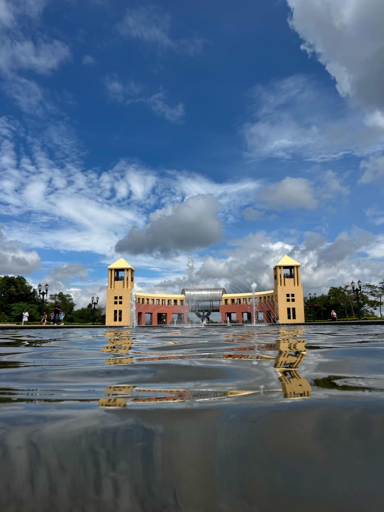
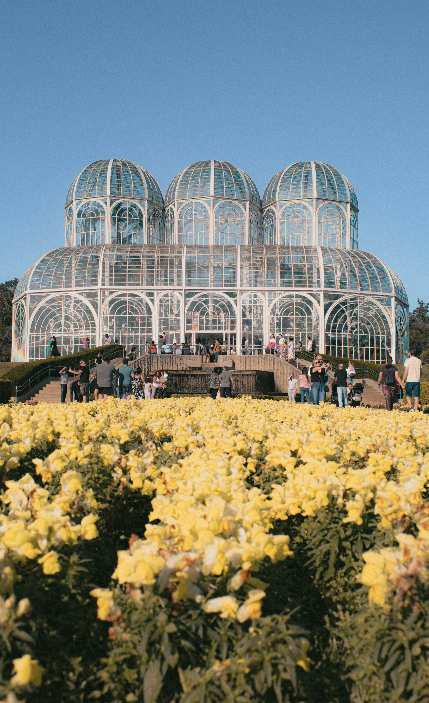
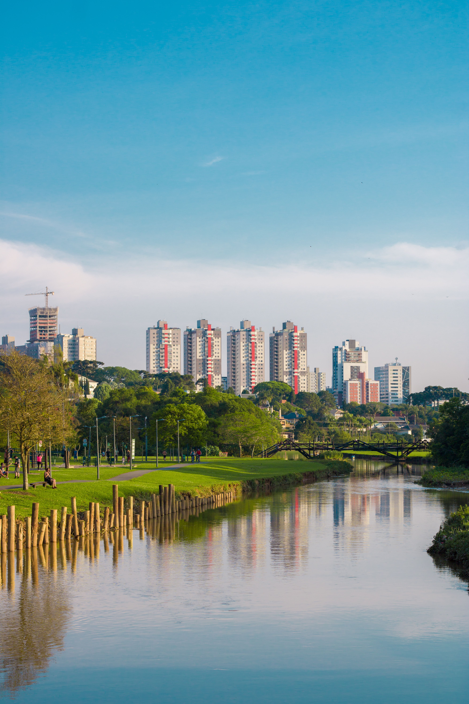

sobre o tema
A historia dos parques de Curitiba

Contexto historico
nasceram no final do século XIX com o Passeio Público (1886) para drenar brejos, mas ganharam grande impulso nas décadas de 1970 e 1990

Importancia cultural
memória viva dos imigrantes (através de memoriais poloneses, ucranianos e alemães), grandes palcos de arte (como a Ópera de Arame) e ponto de encontro social, onde o piquenique e o orgulho pela ecologia definem o estilo de vida do curitibano. Valor Cultural e Turístico Homenagem aos imigrantes: Memoriais e construções celebram povos como ucranianos, poloneses e japoneses. Cartões-postais: A famosa estufa do Jardim Botânico e o mirante do Parque Tanguá atraem visitantes do mundo todo. Educação ambiental: Centros de arte e cultura funcionam dentro ou ao lado de várias áreas verdes.

curiosidades
curiosidade 1
A variedade desses espaços na capital é imensa. São 28 parques e 15 bosques, com vegetação formada por trechos da Mata Atlântica, fauna silvestre diversificada, lagos, nascentes e quedas d’água.
curiosidade 2
Além da beleza das áreas verdes e utilidade dos equipamentos públicos nelas presentes, esses espaços são fundamentais para garantir a ocupação adequada do solo em áreas de preservação. Os lagos, por exemplo, funcionam como importantes reguladores da vazão da água, que fazem grande diferença em períodos de chuva forte.
Interaja com o site
Clique no botao acima